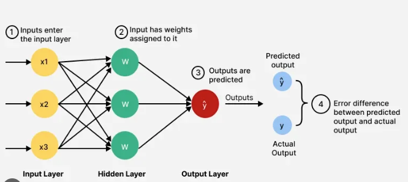

Contents
FeedForward Neural Network#
A Feedforward Neural Network (FNN) — also called a Multilayer Perceptron (MLP) — is the most fundamental form of artificial neural network. It forms the basis of Deep Learning, where data flows strictly in one direction, from input → hidden layers → output, without any feedback loops.
1. Concept Overview#
Feedforward networks model a mathematical function that maps input features to outputs through a series of weighted transformations and nonlinear activations.
Flow#
Input Layer → Hidden Layers → Output Layer
Each layer passes information forward only. No cycles or memory of past data (unlike RNNs).

2. Components#
Component |
Description |
|---|---|
Input layer |
Receives the input data (e.g., pixels, features). No computation; just passes data forward. |
Weights (W) |
Each connection between neurons has a weight that determines how much influence an input has. |
Bias (b) |
A constant added to help the model shift activation thresholds. |
Hidden layers |
Intermediate layers that transform data using weighted sums and activation functions. |
Activation function (f) |
Adds non-linearity to model complex relationships. Common: ReLU, Sigmoid, Tanh. |
Output layer |
Produces final prediction (e.g., class probabilities, regression output). |
3. Mathematical Working#
For one neuron: $\( z = w_1x_1 + w_2x_2 + ... + w_nx_n + b \)\( \)\( a = f(z) \)$
For a layer: $\( a^{(l)} = f(W^{(l)}a^{(l-1)} + b^{(l)}) \)$
Where:
\(a^{(l)}\): output (activations) of layer ( l )
\(W^{(l)}\): weight matrix
\(b^{(l)}\): bias vector
\(f\): activation function
4. Training Process#
Step 1: Forward Propagation#
Input data is multiplied by weights and passed through activation functions.
Produces predicted output ( \hat{y} ).
Step 2: Compute Loss#
Measure difference between predicted and actual output.
Example:
Regression: Mean Squared Error (MSE)
Classification: Cross-Entropy Loss
Step 3: Backpropagation#
Compute gradients of loss with respect to each weight (using chain rule).
Tells how much each weight contributed to the error.
Step 4: Weight Update#
Update each weight: $\( W = W - \eta \frac{\partial L}{\partial W} \)\( where \)\eta$ = learning rate (step size).
This process repeats for many epochs until the loss converges.
5. Activation Functions#
Function |
Equation |
Range |
Use Case |
|---|---|---|---|
Sigmoid |
\(f(x)=\frac{1}{1+e^{-x}}\) |
(0,1) |
Binary classification |
Tanh |
\(f(x)=\frac{e^x - e^{-x}}{e^x + e^{-x}}\) |
(-1,1) |
Normalized data |
ReLU |
\(f(x)=\max(0,x)\) |
[0,∞) |
Deep networks; avoids vanishing gradients |
Leaky ReLU |
\(f(x)=x\) if (x>0), else (0.01x) |
(-∞,∞) |
Handles dead neurons |
6. Example Workflow#
Input: features (e.g., 10 values)
Hidden Layer 1: 8 neurons → activation ReLU
Hidden Layer 2: 4 neurons → activation ReLU
Output Layer: 1 neuron → activation Sigmoid (binary output)
Loss: Binary Cross Entropy
Optimizer: Gradient Descent or Adam
7. Advantages#
Learns nonlinear relationships.
Works on both classification and regression.
Forms the foundation for deep architectures like CNNs, RNNs, Transformers.
8. Limitations#
Requires large data for good performance.
Training can be slow for deep models.
Sensitive to scaling and weight initialization.
No temporal or spatial awareness (unlike RNNs or CNNs).
9. Example (Python with Keras)#
from tensorflow.keras.models import Sequential
from tensorflow.keras.layers import Dense
# Build model
model = Sequential([
Dense(8, input_dim=4, activation='relu'),
Dense(4, activation='relu'),
Dense(1, activation='sigmoid')
])
# Compile
model.compile(optimizer='adam', loss='binary_crossentropy', metrics=['accuracy'])
# Train
model.fit(X_train, y_train, epochs=50, batch_size=16)
Summary
Feature |
Description |
|---|---|
Data flow |
One direction (no feedback) |
Learning rule |
Backpropagation + Gradient Descent |
Best for |
Structured/tabular data, basic pattern recognition |
Limitation |
No memory or temporal understanding |